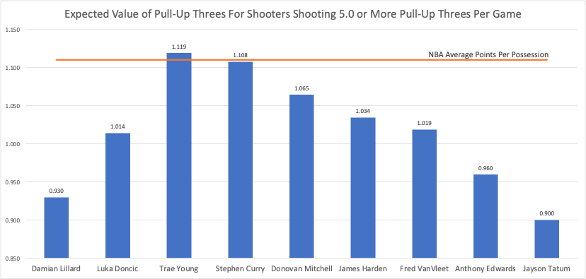
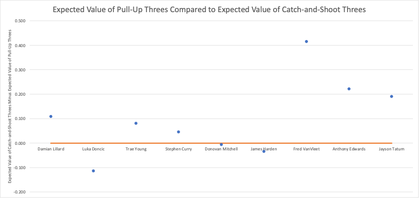
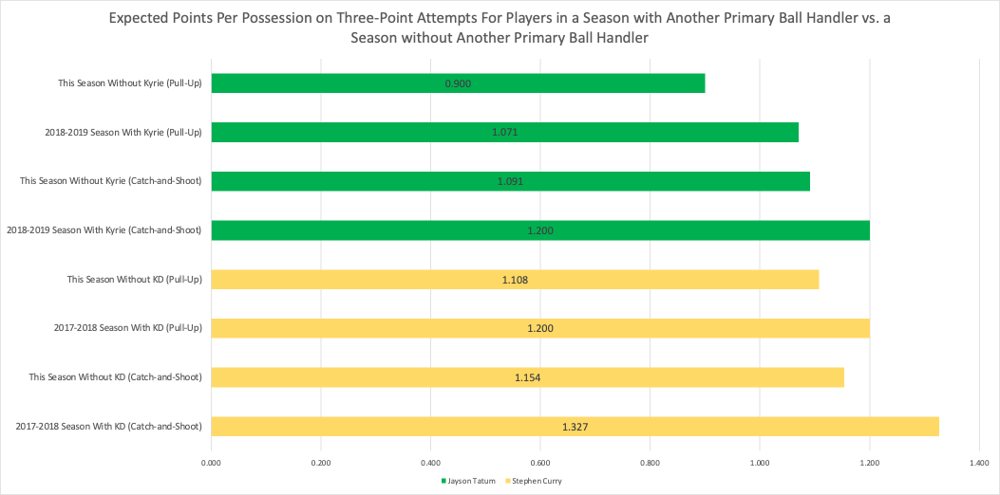

Is the Pull-Up Three Worth it?
By Ryan Idnani | March 28, 2022

With elite backcourt players like James Harden, Luka Doncic, Steph Curry and Trae Young lighting it up from three, it’s time to take a deeper look into how they are making their mark on the scoreboard. Harden and Luka are well-known for their ability to hit contested step-back threes. On the other hand, Steph and Trae are better known for pulling up from way downtown and hitting crazy threes. As a fan watching these players, it seems that every time these elite shooters put up one of these three pointers, the ball goes into the basket. But, statistically, does it really make sense for these “amazing” three-point shooters to be shooting threes off-the-dribble at such a high frequency?
This season, NBA teams are averaging 111.0 points per 100 possessions, meaning that the expected points NBA teams are generating this season is 1.110 points per possession. For players that shoot over 5 pull-up three point shots a game, should these players be shooting these difficult shots at such a high clip? Given that these players are superstars (and generally on good teams), you would expect this to be a low bar. Calculating expected value of a shot helps visualize how effective a pull-up three point shot is at converting points compared to an average NBA possession.
In this chart, Trae Young is the only player whose expected points per pull-up three is above the league average points per possession, and Stephen Curry is the only player who has an expected points per pull-up three comparable to the league average. The rest of these players (Damian Lilliard, Luka Doncic, Donovan Mitchell. James Harden, Fred VanVleet, Anthony Edwards, and Jayson Tatum) are creating between 0.045 and 0.210 less points per possession than the NBA average on their pull-up three point shots. At first glance, you would conclude that Steph, Trae, and maybe Donovan Mitchell are the only ones who should be taking pull-up threes, but they should make this a less important part of their game. As for the rest of the players on this list, there should be a significant reduction in their shooting of pull-up threes. But, with the three-point shot taking over today’s NBA game, this isn’t necessarily feasible.
Aside from pull-up threes, players have the option to take catch-and-shoot three pointers. Pull-up threes and catch-and-shoot threes are almost binary, meaning that except for special circumstances (like when players pump fake, let a defender blow by, then shoot, or catch a pass and then take a jab-step before taking a shot - see the below clip of Lebron James as an example), all three pointers fall into one of these two categories.

So, let’s take an in-depth look at how these players’ efficiency differs between pull-up threes and catch-and-shoot three pointers.
Surprisingly, James Harden and Luka Doncic shoot worse on catch-and-shoot three point attempts compared to the pull-up attempts. This could be attributed to them being a significant focal point of the offense and always garnering defensive attention when they have the ball. They are not as used to catching a pass and shooting open threes as compared to creating space off the dribble to get better shots. It is better for both Luka and Harden to be running the offense with the ball in their hand, as they can create value for their teams on three-point shots, lay-ups, (occasionally) midrange, and for their teammates, as these two are at the center of the defense’s attention. Then, there is Donovan Mitchell, who essentially creates the same expected value on pull-up three point shots and catch-and-shoot three point attempts. That means Donovan Mitchell should take less catch-and-shoot three pointers, and instead focus on taking pull-up three pointers and keeping the ball in his hand more. This allows him to be more dangerous to opposing defenses as he can effectively knock down the triple, drive to the basket, settle in the in-between mid-range area, or attack one of these areas and create for his teammates, just like Luka and Harden.
As for the rest of the players shooting over 5.0 pull-up three-point shots per game, they should try to shoot more catch-and-shoot three-point attempts instead of taking pull-up threes. Although, the pull-up three shouldn’t be completely eliminated from their game as it adds another element to their repertoire that defenses have to take into account. This could be made more effective by adding another ball-handling player who could take some defensive pressure off of them. For example, in the 2017-2018 season when Kevin Durant was on the Warriors, Steph Curry’s expected value for pull-up three-point shots was 0.092 points higher than the 2021-2022 season, and his expected value on catch-and-shoot threes was 0.173 points higher than this season, on similar volume. So, not only does adding another ball-dominant piece create better catch-and-shoot opportunities for these great three-point shooters, it also makes them more dangerous with the ball in their hand. This hypothesis can be supported through Jayson Tatum’s three-point shots as well. In the 2018-2019 season when Kyrie Irving was still on the Celtics, Jayson Tatum’s expected value for pull-up threes was 0.171 points higher than the current season, and his expected value for catch-and-shoot three-point shots was 0.109 points higher than the 2021-2022 season.
As for Fred VanVleet, when Kyle Lowry was his teammate in the 2020-2021 season, Fred VanVleet shot one less pull-up three point shot each game compared to this season, and shot about 0.5 more catch-and-shoot three-point shots per game than this season. This is especially significant, as Fred VanVleet’s expected value of catch-and-shoot threes is 0.416 points higher than on pull-up three point attempts.
Overall, the pull-up three-pointer is not a great shot but can be effective at setting up other shots and creating for teammates. For players like Luka Doncic, James Harden, and Donovan Mitchell, this is much more effective than the catch-and-shoot three-point shot, so they should be the main ball handler on their team and have the green light to shoot pull-up threes. For most other players, they would benefit from adding another ball-handling player, who can take some of the pressure off of them. This would also make them more effective at shooting both catch-and-shoot three-point shots and pull-up three-point shots.
Sources:
- https://compote.slate.com/images/2669b163-c1b7-42ea-806f-cb21d167f25f.jpeg?width=1600&rect=1560x1040&offset=0x0
- https://www.basketball-reference.com/leagues/NBA_stats_per_poss.html
- https://www.nba.com/stats/players/pullup/?sort=PULL_UP_FG3A&dir=1
- https://www.nba.com/stats/players/catch-shoot/?sort=CATCH_SHOOT_FG3A&dir=1
- https://videos.nba.com/nba/pbp/media/2021/12/15/0022100420/38/952ce31c-6f50-4eaa-b9a0-9b2b79893333_960x540.mp4